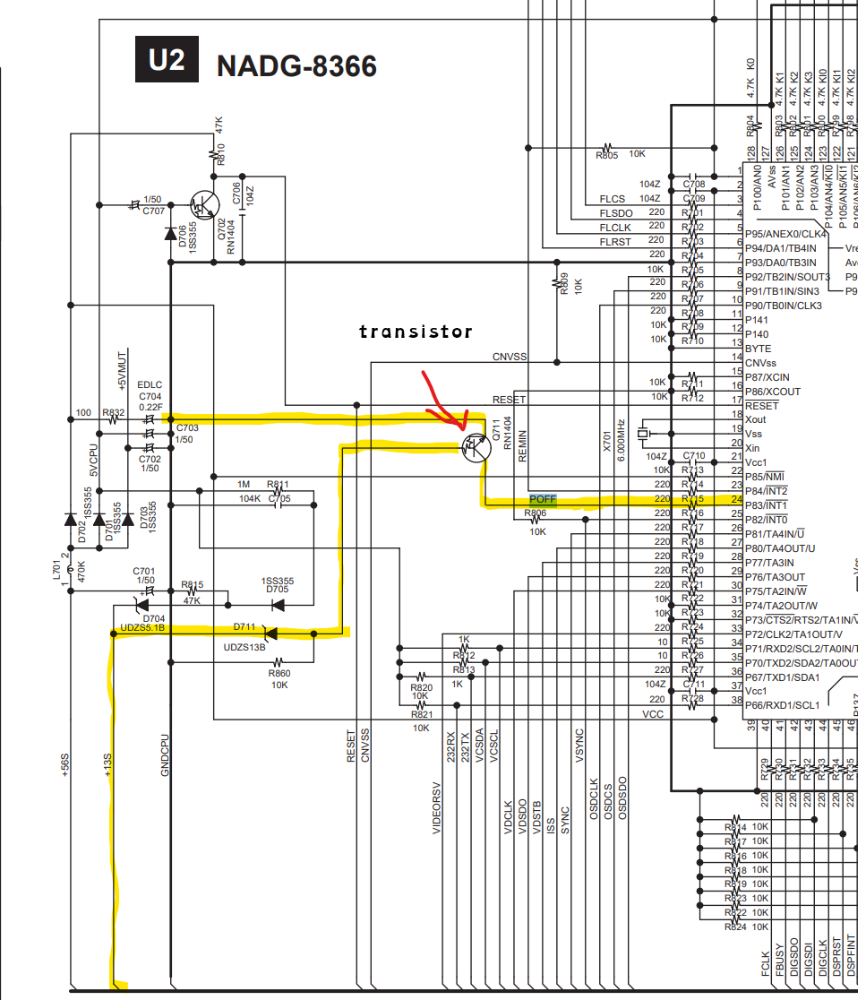
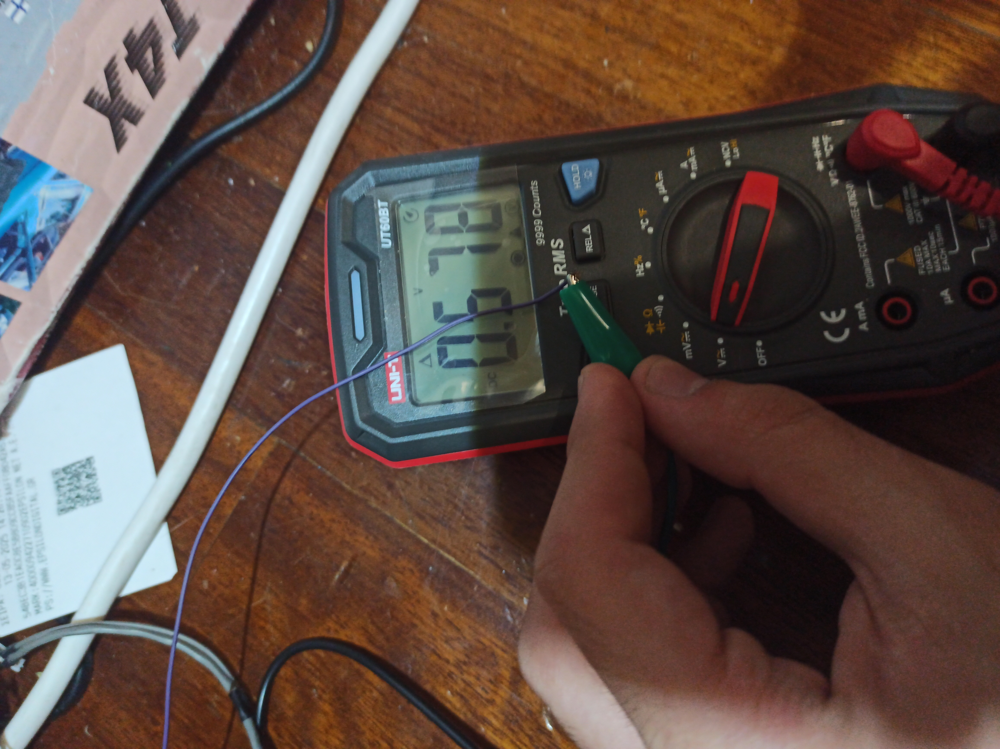

Always be careful when opening up Electronics
Always be careful when opening up ElectronicsAn AV receiver from 2005 was not working with no sense of life and the model is an Onkyo TX-SR602E

Firstly, we identify what are the exact symptoms
Now with that information we can conclude where should we start looking for problems.
Before we start we will grab a copy of the service manual.
I personally like to use elektrotanya in order to get service manuals for devices.
After we open up the receiver here's what we will check:
Then, after looking at the above and seeing that everything is working as it should,
we check for standby voltage with a multimeter
we will see the U5 board that is responsible for standby power.
After seeing the scamatic for the board we see a certain connector that we need to have 10 volt and we will see pin "+10vs and +10vss".

So if we continue to follow the scamatics for the 10 volt line we will end up in a power supply section, then after that we go to the preamplifier section and there we have a board that on it has some connectors that connects to the microprocessor board.
In the microprocessor board we have a convenient firmware writing port that lets us communicate directly with the CPU the [Renesas (M16C/62P) M30627FHPGP] of the receiver.
Afterwards, useing UART and RealTerm we conclude that the microprocessor is halting immediately after a reset has been done on the microprocessor.
Now it's time to take some measurements on the microprocessor board:
| Onkyo Cap Test Measurements | ||
|---|---|---|
| Time | satus | voltage |
| 16h:12m:51s | not on power | 3.587v |
| 16h:13m:02s | not on power | 3.587v |
| 16h:13m:03s | on power | 4.713v |
| 16h:13m:10s | on power | 4.772v |
| 16h:13m:40s | on power | 4.812v |
| 16h:25m:28s | on power | 4.935v |
| 16h:45m:47s | on power | 4.940v |
| 16h:45m:54s | on power | 4.940v |
| 16h:55m:54s | not on power | 4.885v |
| 16h:57m:00s | not on power | 4.874v |
| 16h:57m:44s | not on power | 4.857v |
| 16h:58m:00s | not on power | 4.851v |
| 16h:58m:05s | not on power | 4.829v |
Thereafter seeing the above table we can conclude that we have
capacitor degradation
which gives us a clue to what may have happened.
Following we take a careful look at the microprocessor scamatic and we find a pin with the name POFF that connects to a transistor, so when the line goes LOW it signals to the CPU that there has been a POWER FAILRE and therefore the CPU halts.
After measuring the transistor



we see that the input of POFF is 0.57 volts that means the transistor has sent a LOW signal to the CPU so that means the CPU is halting.
Now we need to find out if
when we started tracing the traces of the transistor lines we end up at the connector at the microprocessor board that needs 13 volts input to end up to the transistor.
After, seeing that there is no voltage going to that certain pin (+13S) for the transistor, we go back to the previous preamplifier board and we see near some capacitors and we find a suspicious substance. Then after taking a more careful look we see that corrosion has happened to the traces due to a capacitor leaking.
We will now repair that trace and we will try it again.
Afterwards, repairing the trace and replacing some capacitors we see that the transistor now doesn't pull low letting the CPU of the receiver continue as normal, so the receiver goes properly into standby therefore we have fixed the receiver.


Also, we can understand if the device is working by hearing the device at startup. We can understand by the clicking of the relays the following order is with the receiver not working:
and one with the receiver working: